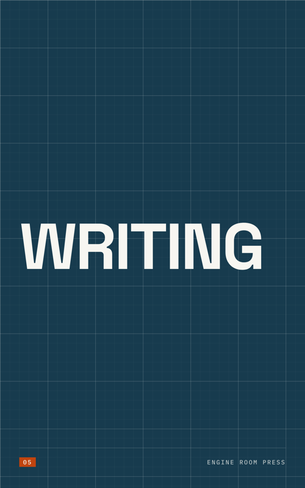
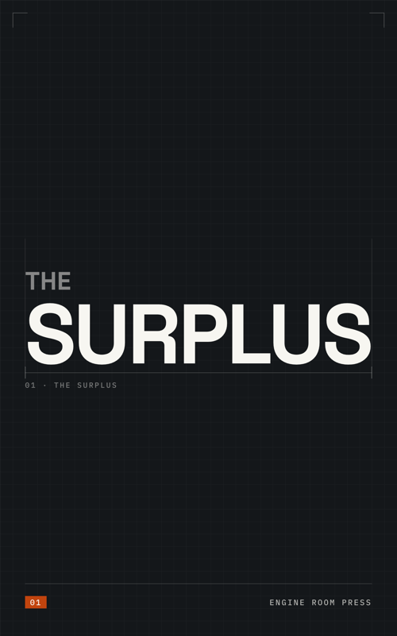
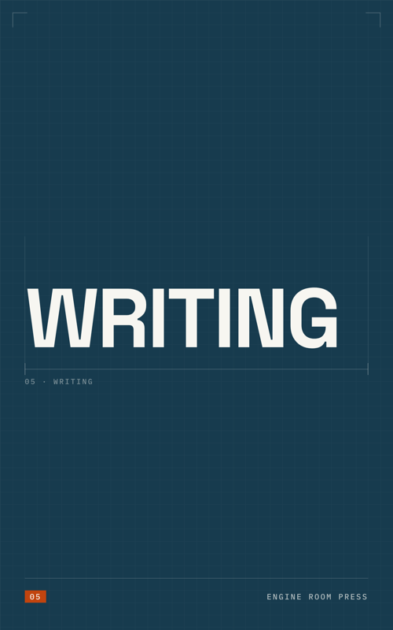
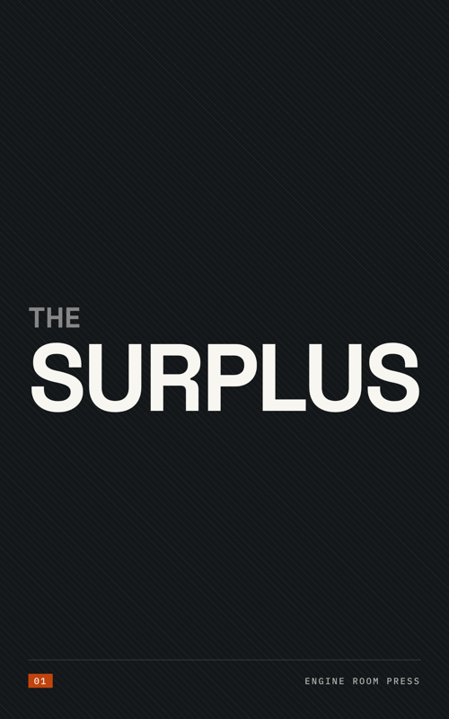
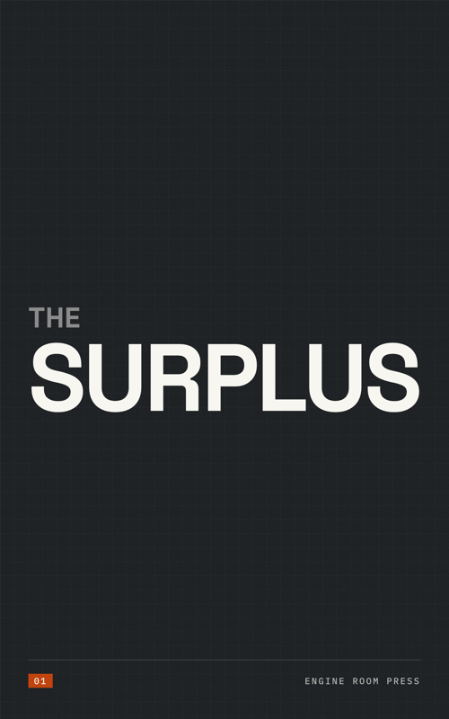
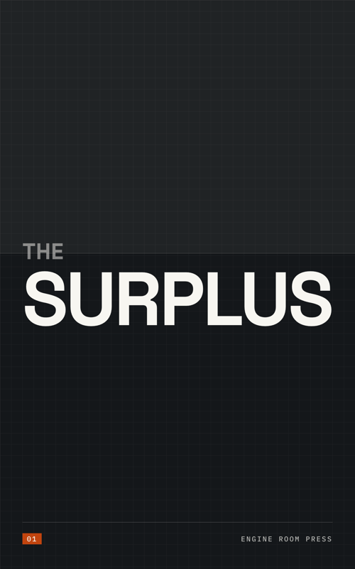

Same title, same type, same rules — only the surface behind the words changes. Two sizes matter: the big one is how it looks on the shelf page, the small ones are how it looks as an Amazon thumbnail and in a feed, which is where it actually has to survive.
Tell me a number. They can also be combined — grain under any of the others.
Texture 00
A single 50px grid at 10%. Even and flat. This is the one you said feels undesigned.

Texture 01
Two grids, not one: a fine 50px mesh plus a heavy line every 250px. The field now has structure, like real engineering paper.


Texture 02
The grid goes quiet and the drawing device does the work: the title is measured, the way a part is measured on a technical drawing. Corner ticks, an extension line each side, one mono figure.

Texture 03
45-degree hairlines, the drafting convention for a surface that has been cut open. Straight from the name: the engine room, opened up.
Texture 04
A printed dot screen instead of a drawn line. Warmer and more print-like; the field stops looking like a slab of colour.

Texture 05
No pattern at all — just fibre noise, so the flat colour is not perfectly flat. The quietest option. Reads as printed board rather than a screen fill.

Texture 06
No pattern at all. The field is cut in two by one hairline: a lighter tint above, the true colour below, and the title sits on the join. Structure instead of texture.